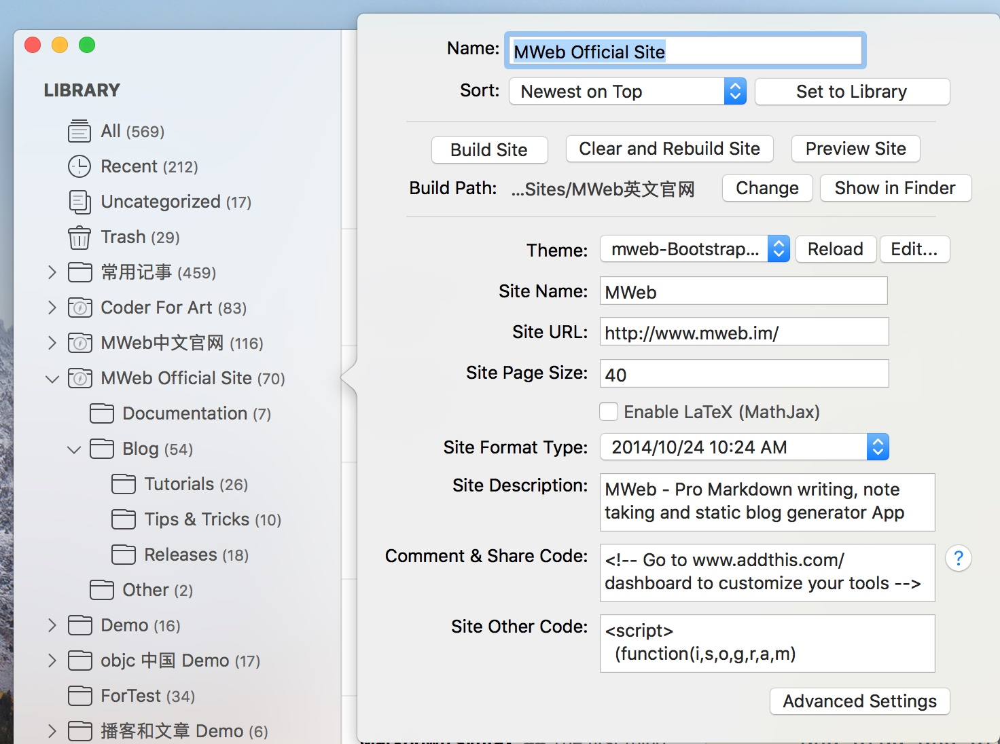
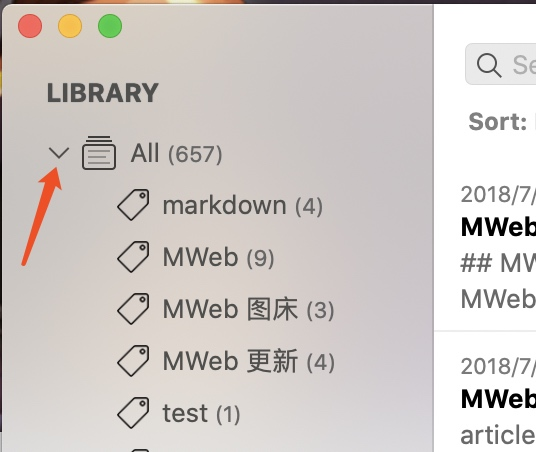

This article introduces the detailed use of the Library. If you haven't read Basic usage of MWeb, I suggest you read it first. It should be noted that the following content in this article is almost all about MWeb on macOS. The use of the Library on iPadOS/iOS is relatively simple, mainly by clicking the "+" button at the bottom to add new categories and documents. then long press the list item to favorite, move, rename and delete operations by category or document.
The Library storage location
MWeb's Library can be stored in a folder, or in iCloud (synchronized using CloudKit technology). In MWeb for macOS, you can view the location where the Library is stored in Preferences - Library & Backup; in MWeb for iPadOS/iOS, you can view the location of the Library in Settings Page - Library. It should be noted that under iPadOS/iOS, if your Library is not stored in iCloud, when you delete the MWeb app, the Library will also be deleted! Therefore, it is recommended that set the Library stored in iCloud on iPadOS/iOS. If you want to sync across multiple devices, please also store your Library in iCloud.
The Library structure, backup and restore from backup
In general, it is not necessary to understand the structure of the Library. If you are using MWeb under macOS and want to backup or restore the Library, then it is necessary to understand the structure of the Library. Under macOS, when the Library is stored in a folder, you can directly view the folder where the Library is located to understand the structure of the Library. When the Library is stored in iCloud, MWeb will use CloudKit technology to completely synchronize the entire Library to a private folder of the MWeb. the located at: ~/Library/Containers/com.coderforart.MWeb3/ Data/Library/Application Support/MWebLibrary. If you are using MWeb Standard version, please replace com.coderforart.MWeb3 with com.coderforart.iOS.MWeb.
The folder structure of the Library is composed of the docs folder, the mainlib.db file and the metadata folder. Among them, the docs folder contains the related materials of each note . The mainlib.db file saves the category and tag information and the category information to which the note belongs. The metadata folder only exists when the publishing service is used, and saves the information related to the publishing service. The figure below is a typical Library structure.

This structure works well for backups and for git backups, and you may have noticed that even if you choose to store your Library in iCloud, you can also back up your Library. Because MWeb will sync all data to a private folder, you only need to backup that folder.
Under macOS, if you want to restore a Library from a backup, there are two cases:
- When the Library is stored in a folder: first copy the folder of the backup Library to the location you want, then in
Preferences - Library & Backup, click the "Choose an Existing Library..." button and select that location. - When the Library is stored in iCloud: First, replace the files in the private folder (mentioned above) of the Library synchronization with all the files in the folder of the backed up Library. Then, restart MWeb and check if there is any problem with the data. If there is no problem, click the "Sync" button, in the menu that appears, select "problem with synchronization?", and in the interface that appears, click "Re-upload the current Library to iCloud". After the upload is complete, go to this interface and click "Re-download all content on iCloud".
How to use the categories tree
There are two types of MWeb categories, one is the common categories, as shown below:
One is static website categories, this categories can generate static websites, as shown below:

MWeb provides a very simple way to generate a static website from the classified documents. For example, MWeb Chinese official website is generated by MWeb's static website function.
The categories tree on the left side of the interface can be associated with the right-click and drag-and-drop to complete related management operations. The middle document list bar can drag and drop documents to the left category for document categories management. There are three cases of this drag and drop, and the following assumes that the drag is Category A:
- Drag the current document directly to Category A. In this case, if the document in the list belongs to the currently selected category, it will move to the Class A, otherwise it will be added to the Category A for the dragged document.
- Hold down the
CMDkey to drag the current document to the Category A. In this case, the added value of the dragged document is increased to Class A. - Hold down the
Optionbutton and drag the current document to the Category A. In this case, if the dragged document belongs to the Category A, the canceled document belongs to the Class A, If it does not belong to the Class A, no action is taken.
This method of operation is more than one choice, that is, it can be managed in batches. If it is a single document, there is a better way to click on the top information bar of the editor and then check it, as shown below:
This place is also the only place where you can set the document tag. You can also use the shortcut CMD + 8 to open this interface.
Reference between documents
It is very simple to reference other documents in MWeb. In the document list, right-click the document you want to reference and select ``.

Then paste the location of the document to be referenced CMD + V, and MWeb will generate [How to use Publish Script to Publish website.](how_to_use_shell_script.html). If you hold down the CMD key and click, the referenced document will be opened.
Document Sorting
The document library supports multiple sorting methods, and each top-level category can also set its own sorting method. There are two ways to modify the sorting method, one is as shown below:
The other is to select the top-level category to be modified or a sub-category under the top-level category, and then right-click in the document list, as shown below:
In various sorts, custom drag sorting is special and requires special instructions. Before I explain, let me explain a global option: Group By Categories Right-click in the document list to see the menu for this function. If it is enabled, it means that the documents in the list are in the state of grouping by category, no matter what sorting settings.
This use is actually to find and organize documents. However, if this global option is not enabled, then if the sort is set to a custom drag sort, the top level will also be grouped by category. In other words, as long as it is a custom drag sort, the document list bar must be displayed in groups.
This is due to the fact that a document can belong to multiple categories and the rules are set, otherwise it will be messy.
If you try to drag and drop in a category that is not a custom sort, MWeb will prompt you to set it to a custom drag sort before you can drag and drop. Customize the documents under the drag sort category, it is recommended to ensure that only one category is classified, so drag and drop sorting will not be messy.
How to use tags
The function of the tag in MWeb is very simple. The method of setting the tag is as mentioned above. In addition, the document is viewed by Tag, as shown below:

It can be seen that MWeb will list the tags of the entire document library and the tags under the currently selected category. After selecting, you can view the documents by tag.
Document Outline View
As shown in the following figure, the document outline view will list the title and inserted images and attachments of the current document, and of course the extension items that can be used for static websites (if the current document belongs to a static website category). The figure below shows the effect of fixing the outline view.

Import and export of document libraries
As shown in the following figure, the document library supports importing Markdown documents into the document library. If you select a folder when importing, MWeb will import all the Markdown documents in the folder into the currently selected category. If there is a local image in the Markdown document of the folder, it will also be imported and modified to the image address in the document library format. This is only available in version 3.x. Version 2.x will only import Markdown text and will not import images. It should be noted that to import images, be sure to select the entire folder.
In addition, you can export the entire categories to Markdown, and the exported Markdown document will create a folder according to the structure of the categories. Creating folders by category structure is also a feature that is only available in 3.x.
The remaining two are exported to Epub and PDF. Yes, you can export the entire category to Epub or PDF!
Some question with MWeb 4 iCloud sync Library
What's the difference between MWeb 3's iCloud sync and MWeb 4's?
The synchronization of MWeb 3 is to save the folder of the Library in iCloud Drive, and the system will synchronize the files. The synchronization of MWeb 4 is performed using a technology called CloudKit, which is controlled by MWeb and is no longer stored in iCloud Drive. If you want to use MWeb 4's iCloud sync, you need to manually click the "Store to iCloud" button in the Preferences - Library & Backup.
How does MWeb 3's Library sync to iCloud?
If it is the macOS version of MWeb, please first confirm whether it is saved to the folder of iCloud Drive or a related cloud drive. If so, you need to ensure that the folder where the Library is located is completely synchronized to the local. In short, we must first ensure that the current Library is complete sync.
Then, in Preferences - Library & Backup, click the Store in iCloud button, and then select Merge in the pop-up prompt to choose whether to merge Library.
This prompt is only displayed once. If it is too late to choose, you can refer to the method of restoring from backup in "The Library structure, backup and restore from backup" at the top of this article.
If it is the iOS version of MWeb, because the original iOS version of the Library is read-only, you need to use the macOS version of MWeb first, and synchronize the Library to iCloud according to the above method. Then in the iOS version, you can also set the Library to Store in iCloud.
Can I manually git backup my Library when choose stored to iCloud?
Yes, in MWeb 4, Apple's CloudKit technology is used for synchronization, which will completely synchronize all documents to a private folder of the local MWeb, located at: ~/Library/Containers/com.coderforart .MWeb3/Data/Library/Application Support/MWebLibrary. If you are using MWeb Standard version, please replace com.coderforart.MWeb3 with com.coderforart.iOS.MWeb.
If you want backups or git backups, just back up this location regularly. This location can only be backed up, please do not change it.
The structure of the Library in this location is the same as the local one. If you do not want to use iCloud synchronization, you can copy this folder to other places, then switch back to the local folder storage in MWeb, and then select the copied folder That's it.
What if the desired version of the document is overwritten when syncing with iCloud?
In the macOS version of MWeb, you can use the menu: File - Revert to - Browse All Versions, for the iOS version, you can click the "..." button and select "Document History..." to restore. It should be noted that the document version for iOS is only for iCloud-synced documents in the Library. It is recommended to avoid editing the same document on multiple devices. If you want to edit it, please confirm that the document is in the latest state.
Because the synchronization process is stateless, for example, the current device network is not good, network transmission errors, CloudKit errors, etc. will cause the latest version of the current device's document to be unable to be synchronized to CloudKit in time. At this time, if another device uploads A new version of the document, and then the current device becomes normal, will receive an update push from another device, and the current device's document will be updated.
Want to initialize the MWeb document library
If you want to initialize MWeb's document library, the methods are:
- Download https://cdn.mwebapp.cn/MWebInitLibrary.zip and unzip it, then use
Choose an Existing Library...to select the location after unzipping. - Run the command on the command line:
defaults delete com.coderforart.MWeb3(ordefaults delete com.coderforart.iOS.MWebif MWeb Standard version), this operation will delete all MWeb preferences, Start all over again.